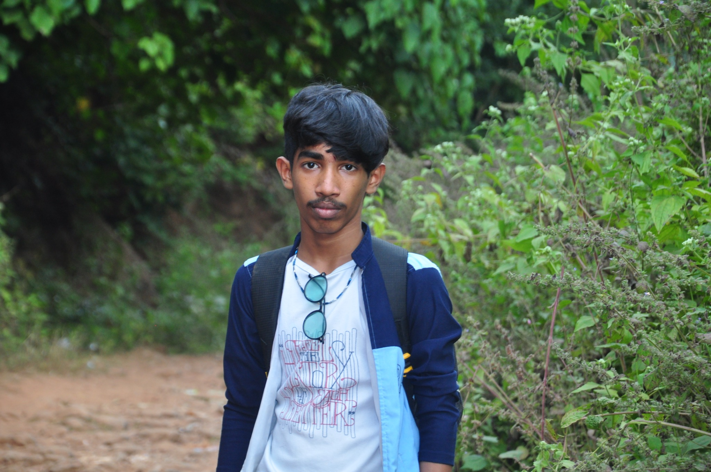

01
2024
MPL High School (OBS)
Pithapuram · Secondary education
84.5%10th grade
FIRST-YEAR AIML STUDENT INDIA
First-year B.Tech AIML student learning by building, experimenting, and turning ideas into practical projects.
assets/akash-photo.jpg

Hi, I'm L. Akash, a first-year B.Tech student specializing in Artificial Intelligence and Machine Learning at Adarsh College of Engineering.
I'm interested in web development, Python programming, and building new things. I enjoy exploring ideas, learning new technologies, and turning what I learn into practical projects. I'm at the beginning of my journey, and I'm excited to keep learning, experimenting, and growing as a developer.
Three milestones. One ongoing learning journey.
2024
Pithapuram · Secondary education
2024 — 2026
Pithapuram · Intermediate MPC
2026 — 2030 · CURRENT
Chebrolu · B.Tech, Artificial Intelligence & Machine Learning
Real work, current learning, and ideas still on the roadmap.
A Flask and SQLite platform designed to bring college information into one place, including announcements, events, timetables, holidays, and documents.
FEATURES
↳ Project statuses are explicit: completed, in progress, or planned. Only the verified CollegeConnect repository is linked.
PAPER PRESENTATION
Recognized for a solo paper presentation exploring how artificial intelligence and machine learning can contribute to cybersecurity.
A snapshot of the tools I've used and the path I'm building.
TOOLS I'VE USED
No artificial skill percentages — just an honest record of learning and use.
FOUNDATIONS
Exploring HTML, CSS, and Python fundamentals one concept at a time.
BUILDING
Applied Python, Flask, and SQLite to create CollegeConnect.
NEXT
Continue improving web development skills and build more practical projects.
OPEN TO LEARNING & COLLABORATION
I'm always interested in learning, exchanging ideas, and exploring projects that help me grow.
Profile links will be added once the actual URLs are ready.